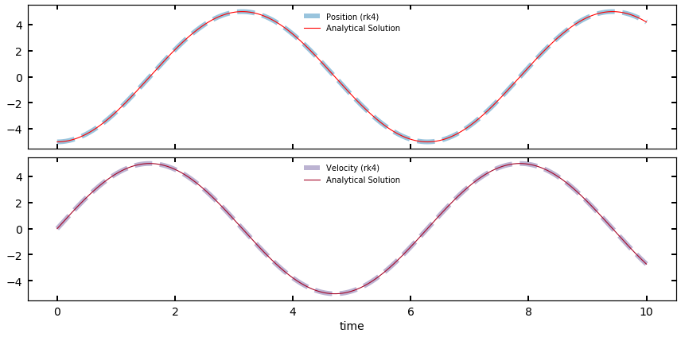

Keywords: orbit integration, nbody, rk4, differential equations, classes, object oriented programming, wrappers
Hey ya’ll! Today we’ll be talking about a classic problem in early astronomical instructions of Python: The N-body problem! Actually, we’ll be getting more general than N-body: We’ll write a code that can also integrate particles in an arbitrary potential.
We’ll also go a step beyond most tutorials on writing an orbit integrator because we will be using the rk4 framework to perform the integration. In fact, the way we are going to write our rk4 integrator, we’ll be able to use it to solve any differential equation we have parameters for, numerically.
If you don’t know what rk4 is, don’t worry for now, I’ll describe it more below, or check it out on Wikipedia. The short version is that rk4 integration allows you to be more efficient with your time steps by reducing the error accumulated by each numerical approximation.
Let’s get started!
In the first, traditional mode of this problem, we’re going to integrate the n-body problem in physics – that is, the earth moon, or earth moon sun, or solar system. We all know Newton’s famous equations for gravity and acceleration, which allows us to write for some object that
where is the position vector between the object and some other object of mass M. The above allows us to calculate the acceleration (magnitude and direction) induced in some object by the gravitational attraction of another object.
Since we have the ability to calculate a body’s acceleration at some time t, based on its positions relative to other objects, we can derive from equations of motion the velocity and positional changes that the object would experience in some time step .
We can then update the “current” velocity and position of the object, and recalculate the acceleration at the new position. If we do this calculation for all bodies in a system simultaneously, we’ll have an N-body integrator!
To summarize, our plan is to write an algorithm that (loosely)
And, we’ll want our code to save all the positions and velocities so we can see the orbits after the fact.
As we’ll see below, the most efficient way of setting up this problem is by having a single vector contain all of our derivatives. For example, if we have 3 objects in our system, the single vector we’ll be throwing around in our code will look like
Where, sequentialy, we store the positions and velocities (or more generally, values and derivatives) of all the objects of interest.
Now, I don’t know about you, but from a user / data entry stand point, if I were making a package, I would not want to enter (or make users enter) data into my code in this format. Enter wrappers. Wrappers are pieces of code that serve as an interface between the nuts and bolts of your code and the user. Think of it like a GUI, but still in code / text format.
When I think of the N body problem, it seems natural as a user to want to set up several Bodies that have attributes I know, and to then initialize a Simulation with those bodies.
In the cell below, I’d like you to do just that: Set up a class called Body which has in its __init__() function positions, velocities, and accelerations, along with mass and a name, for said body. My recommendation would be to have the inputs for the positions, velocities, and accelerations be their own, 3-component arrays, e.g., x_vec, v_vec, a_vec, which would look something like x_vec=np.array([1,1,0]).
Note: Now might also be a good time to think about units. In the real world, things have units, and we’d love to enter things in convenient units and have the code just, you know, deal with it. There are many ways to approach this, but in this tutorial we’ll be using astropy.units and astropy.constants to handle units.
import numpy as np
import matplotlib.pyplot as plt
import astropy.units as u
import astropy.constants as c
class Body():
def __init__(self,#your code here!):
#Your code here!
pass
The basic steps done above basically just involved setting a bunch of self.X variables in init. Now add a meethod to your class above called return_vec which returns the y vector I described above — basically, if you run a np.concatenate on the x_vec and v_vec inputs, you’ll have what we need.
We’re not quite done though. Ultimately, we need to pick a unit system to work in for our real-world simulator. I’ve decided for this tutorial that we’ll be using the cgs system, as it’s what astronomers typically use.
Using the astropy modules imported above, you can coerce any input x_vec and v_vec and mass Quantities to be in cgs units with the .cgs method. In your initialization, go ahead and enforce this, and then add the additional step of stripping the units once you’ve done so. For example:
#here is some mass a user might set up
my_mass = 10 * u.Msun
print(my_mass)
# We can convert this to cgs and then strip the units via
my_mass_stripped = my_mass.cgs.value
print(my_mass_stripped)
10.0 solMass
1.9884754153381438e+34
Great! So now, users should be able to set up an instance of the body class by typing something like
Earth = Body(name='Earth',
x_vec = np.array([0,1,0])*u.AU,
v_vec = np.array([0,30,0])*u.km/u.s,
mass = 1.0*c.M_earth)
where above, I initialized the earth at 1 AU (in y), and with a 7.8 km/s velocity upwards in this unit system. Your body code should read these in, convert all units to cgs, then strip them to leave just the values. Remember, your code should also have the method return_vec so that
Earth.return_vec()
returns the vector of positions and velocities we talked about above. Remember, if you have any trouble, you can always check out the solutions!
Now that we have the ability to set up Body objects, we want to, you know, integrate them! Let’s start building up a class called Simulation which will store everything we need.
In the cell below, set up a class called Simulation which in its __init__ function takes only the variable bodies in addition to self. Bodies, as we’ll define it, is simply a list of Body objects. Basically, I want to setup my simulation as follows:
Earth = Body(name='Earth',
x_vec = np.array([0,1,0])*u.AU,
v_vec = np.array([0,30,0])*u.km/u.s,
mass = 1.0*c.M_earth)
Sun = Body(name='Sun',
x_vec = np.array([0,0,0])*u.AU,
v_vec = np.array([0,0,0])*u.km/u.s,
mass = 1*u.Msun)
bodies = [Earth,Sun]
my_simulation = Simulation(bodies)
Once your init has read in the list of Body objects and set that list as a class attribute, there’s a few things we can do within init() to get setup. Do the following:
self.N_bodies equal to the length of your bodies listself.Ndim equal to 6. This represents the 6D phase space info in this diff eq (i.e., len(y)self.quant_vec that is the full vector for all the objects. This is going to look like a concatenation of a list comprehension over all the bodies using body.return_vec(). Hint: array-ize your list comprehension before feeding it into np.concatenate.Alright, now that that’s ready, let’s talk one by one about the four methods that will make up our simulation class: set_diff_eqs(), rk4(), run(), and plot(). The last one is aesthetic, so we’ll table it for now.
Our first method here is going to be a simple setter, which will allow the user (us) to input a separate, externally written function which evaluates the differential equation at hand into our Simulation. Why do this? If all you were doing was a gravity-based N-body code, you wouldn’t, you’d just include it in the class. But with this modular set up, we can use our integrator to solve both using traditional N-body gravity as well as using, e.g., gravitational potentials. The actual step of calculating accelerations is different in this case, but we can write our separate solving functions to do this and read it into our Simulation. Since this is straightforward, I’ll provide it below:
def set_diff_eq(self,calc_diff_eqs,**kwargs):
'''
Method which assigns an external solver function as the diff-eq solver for RK4.
For N-body or gravitational setups, this is the function which calculates accelerations.
---------------------------------
Params:
calc_diff_eqs: A function which returns a [y] vector for RK4
**kwargs: Any additional inputs/hyperparameters the external function requires
'''
self.diff_eq_kwargs = kwargs
self.calc_diff_eqs = calc_diff_eqs
What’s going on above? The method takes as an argument a handle or reference to some externall written function which it internally refers to as calc_diff_eqs. The method also allows for the entry of keyword arguments, which will come in handy later. Then it just sets class attributes for them.
Here’s where things get fun. The next method actually applies the rk4 algorithm to our system.
For the purposes of this tutorial, I’m not going to take a ton of time explaining Runge-Kutta, but the short explanation is that whenever you perform a numerical integration (i.e., take a timestep dt, calculate, repeat), you introduce error into your positions due to the finite step size you took. This error is reduced with smaller dt’s, but this increases how many steps you have to take to integrate the same amount of total time.
We call an integrater linear or first order if it is the case that reducing your time step-size by a factor of ten results in a factor of 10 reduction in accumulated error. The method of direct integration, in which the update looks like:
extrapolates the new position and new velocity from the current position and acceleration. A more clever scheme can actually calculate accelerations/positions at intermediary points between and . We call these higher order schemes, and they are classified by how the accumulated error scales with time step size. Basically, the output of these numerical integrators looks like
That is, each new position is the old position plus times some update which carries with it some error which scales with some power of the timestep. A scheme (like rk4) is considered fourth order because each step has an error that scales with , and an accumulated error across all steps that scales as .
Here is the formula for rk4:
where the above are combined to return the next vector as follows:
You can think of the 's (with the dt multiplication) as being estimates for the new , which are progressively more refined.
These then get added together but in a weighted way, as described by the algorithm.
To hammer home the point that what we’ve developed is a generalized diff eq solver that we happen to be applying to planets, let’s use our rk4 formalism on some simple differential equations that we can easily plot the analytical solutions for (and confirm it’s working!).
The classic diff eq of all physics is the simple harmonic oscillator. The motion of an SHO, (e.g., a spring), is defined by the equation of motion
which we know is seperable into
First, let’s write the rk4 part, since assuming we can write our diff-eq evaluator in the right way, the rk4 part is very easy:
def rk4(t,dt,y,evaluate):
'''
Given a vector y with [x,xdot], calculate the new y for step dt,
using rk4 method
'''
k1 = dt * evaluate(t, y)
k2 = dt * evaluate(t + 0.5*dt, y + 0.5*k1)
k3 = dt * evaluate(t + 0.5*dt, y + 0.5*k2)
k4 = dt * evaluate(t + dt, y + k3)
y_new = y + (1/6.)*(k1+ 2*k2 + 2*k3 + k4)
return y_new
In the above cell, I implemented the rk4 algorithm. Not so bad, right? See if you can track how the formulas from above got implemented here. Now, all we need is evaluate, a function that evaluates our diff-eq at some value of t and y.
def evaluate_SHO(t,y,k=1):
'''
evaluate the SHO at time t and y=y.
Note: this diff eq has no time dependence
'''
v = y[1]
a = -k**2 * y[0]
return np.array([v,a])
Notice that was never involved in the calculation — but it could’ve been (like, for example, the heat equation has a time dependence).
Now that we have a way to evaluate the SHO at any t and y, we can try this out with our rk4:
# Running a small integration
y_0 = np.array([-5,0]) #initialize oscillator at x = -5, with 0 velocity.
history = [y_0]
ts = [0]
dt = 0.01
T = 10
nsteps = int(T/dt)
for i in range(nsteps):
y_new = rk4(t,dt,history[-1],evaluate_SHO)
history.append(y_new)
t = ts[-1] + dt
ts.append(t)
history = np.array(history)
ts = np.array(ts)
We new have a history that looks like
history
array([[-5. , 0. ],
[-4.99975 , 0.04999917],
[-4.99900003, 0.09999333],
...,
[ 4.24891709, -2.63565999],
[ 4.22234848, -2.67801667],
[ 4.19535765, -2.72010555]])
So, we took 1001 steps, and stored that many positions and velocity. Let’s take a look, and for fun, compare it to the analytical solution,
analytical_solution = -5*np.cos(ts)
analytical_velocity = 5*np.sin(ts)
fig, ax = plt.subplots(2,1,figsize=(12,6),sharex=True)
ax[0].plot(ts,history[:,0],color='C0',lw=6,ls='--',label='Position (rk4)',alpha=0.5)
ax[0].plot(ts,analytical_solution,color='r',label='Analytical Solution')
ax[1].plot(ts,history[:,1],color='C1',lw=6,alpha=0.5,ls='--',label='Velocity (rk4)')
ax[1].plot(ts,analytical_velocity,'C2',label='Analytical Solution')
ax[0].legend(loc="upper center")
ax[1].legend(loc="upper center")
ax[-1].set_xlabel('time')

If you want practice implementing one yourself before we move on, try the numerically integrating the following:
And for the extra brave, try out the wave equation and diffusion equation.
Bonus: Modify your SHO integrator to solve for the evolution of multiple harmonic oscillators at once! (Hint: just stack them all in one big vector!) Can you get this to solve for coupled simple harmonic oscillators?
The output from the rk4 is a weighted average of several calculated estimates for amount our system evolves in dt (in this case, how far our particles move). As a reminder, we’re solving 2 (or 6, if you count the components) separable diff eqs here,
So, our solved vector has these two results stacked on top of each other so we can do it simultaneously. Because is stacked velocities and accelerations, multiplying by produces positions and velocities (our normal vector).
Simulation class called rk4 which takes in self,t, and dt as parameters. Then, calculate all the values and generate a new vector. Your method will make calls to whatever the current self.quant_vec variable is.Feel free to try this entirely from scratch, or look below for the first 2 values to get you started, and see if you can finish the rest. It’s almost the same as our examples above, but with some extra stuff just from the class:
def rk4(self,t,dt):
'''
RK4 integrator. Calculates the K values and returns a new y vector
--------------------------------
Params:
t: a time. Only used if the diff eq depends on time (gravity doesn't).
dt: timestep. Non adaptive in this case
'''
k1 = dt * self.calc_diff_eqs(t, self.quant_vec,self.mass_vec,**self.diff_eq_kwargs)
k2 = dt * self.calc_diff_eqs(t + 0.5*dt, self.quant_vec + 0.5*k1, self.mass_vec, **self.diff_eq_kwargs)
k3 = # your code here!
k4 = # your code here!
y_new = self.quant_vec + ((k1 + 2*k2 + 2*k3 + k4) / 6.0)
return y_new
Notice in the above code I multiply by a call to the self.calc_diff_eqs() function we set above. This function will be written (below) explicitly to take in a time t, a full vector (of positions and velocities) and a vector of masses (remember, we need the masses to calculate accelerations!). It also takes in any of the kwargs we allowed for earlier (more on that later). Basically, this function is acting as the in the equations presented above.
Note: If the above seems confusing, don’t worry. We can continue to make progress without fully understanding the details of how the Runge Kutta algorithm is working. But the above does implement it properly, which is what matters.
Wohooo! We’ve finally made it to the run() method, which actually carries out the simulation / integration.
Below, I’ve shown you the documentation for the method we’ll be writing; you’ll model your code off that so that we have the same inputs and outputs:
def run(self,T,dt,t0=0):
'''
Method which runs the simulation on a given set of bodies.
---------------------
Params:
T: total time (in simulation units) to run the simulation. Can have units or not, just set has_units appropriately.
dt: timestep (in simulation units) to advance the simulation. Same as above
t0 (optional): set a non-zero start time to the simulation.
Returns:
None, but leaves an attribute history accessed via
'simulation.history' which contains all y vectors for the simulation.
These are of shape (Nstep,Nbodies * 6), so the x and y positions of particle 1 are
simulation.history[:,0], simulation.history[:,1], while the same for particle 2 are
simulation.history[:,6], simulation.history[:,7]. Velocities are also extractable.
'''
pass
So, we initialize our Simulation(), and feed it a list of Body objects. We set the calc_diff_eqs with our built in method, and now we’re ready to run. We call our run function via something like
Simulation.run(T=10*u.day,dt=u.hr,t0=0)
And this executes the integration for that amount of time with those time steps.
As it turns out, our run() method is actually extremely simple. In my solutions, I’ll show you how to add in a progress updater (like a progress bar) and clock the wall time your integration takes. But those are bells and whistles which add code but don’t directly impact the running of the integrator.
run() method, go through and repeat the procedure of converting the inputs into cgs units and then stripping the units to leave numbersOnce that’s done, we need to calculate the number of steps in our simulation. This is simply given by
coerced to be an integer. Generally we’re ok starting at t=0 in our simulation, but you could imagine having an actual starting time for some reason.
run() method, calculate nsteps, the number of steps needed to integrate for time (T-t0) with stepsizes of dt.history attribute which will store all the y vectors we calculate so we can visualize the orbits later. Start it as a list containing the initial vector, quant_vec.new_y is the output of our rk4 method evaluated for rk4(0,dt). Append this new_y to the history, and then overwrite quant_vec to be new_y.You might be wondering why we run our rk4 with the arguments (0,dt). Isn’t the first argument supposed to be some time ?
This is actually a quirk of our particular problem. See, the diff-eq at hand, for , does not depend on time. It only depends on masses and positions. It’s common for diff eqs to depend on time as well, and our code is set up to handle that. But, as we’ll discover in a moment, the values that get plugged into our calc_diff_eqs function (in the calculation of each k) actually get thrown out within the actual acceleration calculation because they’re not needed. If you did need them though, you’d have them.
None of what we’ve talked about within our integrator so far has had any physics involved – only diff eq work. It’s now time to actually compute the accelerations as needed by our rk4() integrator. This is going to be the external function that gets read into our Simulation, and will be different depending on the problem.
At this point, I’ll make an admission. I’m about to provide you the code I use to calculate the accelerations on all the bodies at each time step. It’s not the prettiest code.
In principle, calculating the accelerations between the bodies at each time step is trivial — simply apply Newton’s law. In practice This gets a little annoying, because recall, all our objects are stored in a vector that looks like
So we need some jumpy, skippy indexing to extract each body’s values. Since it is rather unintuitive how I’ve set this up, I’ll simply provide the function below (Don’t worry, you’ll get the chance to write your own next tutorial, for a potential!)
def nbody_solve(t,y,masses):
N_bodies = int(len(y) / 6)
solved_vector = np.zeros(y.size)
for i in range(N_bodies):
ioffset = i * 6
for j in range(N_bodies):
joffset = j*6
solved_vector[ioffset] = y[ioffset+3]
solved_vector[ioffset+1] = y[ioffset+4]
solved_vector[ioffset+2] = y[ioffset+5]
if i != j:
dx = y[ioffset] - y[joffset]
dy = y[ioffset+1] - y[joffset+1]
dz = y[ioffset+2] - y[joffset+2]
r = (dx**2+dy**2+dz**2)**0.5
ax = (-c.G.cgs * masses[j] / r**3) * dx
ay = (-c.G.cgs * masses[j] / r**3) * dy
az = (-c.G.cgs * masses[j] / r**3) * dz
ax = ax.value
ay = ay.value
az = az.value
solved_vector[ioffset+3] += ax
solved_vector[ioffset+4] += ay
solved_vector[ioffset+5] += az
return solved_vector
Okay, what the heck is going on up there?
First, notice that nbody_solve() reads in some time t, despite never using one. This is related to the rk4() quirk above — since this diff eq has no time dependence, it’s just a dummy variable.
Second: I find the number of bodies, which is given by the length of the array over 6 (the number of indices belonging to each body in the list). I then set up an empty solved_vector array that is the right size to take in new calculated values.
Third: I iterate over the bodies with a for-loop, and set a ticker variable ioffset to be i*6. This allows me to index the body with indices 0, 1, 2 and 3, 4, 5, relative to the offset of that body with respect to the total array. Again, six because each body has 6 indices of information.
Fourth: I iterate over the bodies again in an inner for-loop, because I need to calculate the acceleration on each body by each other body. This is why direct N-body solvers are slow, and scale as . You can’t get around calculating each pairwise acceleration (without making some shortcuts). The first thing I do in this second for loop is make sure i!=j, that is, don’t calculate the acceleration of object a on object a. Not only is that not needed (there is none), it also causes a divide by 0 lower down if we allow it.
Fifth: Finally, I do the physics. I get the vector by subtracting the appropriate x, y, and z components of the positions between the and object, use those to get the total distance vector, and use the two of them to calculate the components of the acceleration. I strip some units (since I use astropy's G), and then I add to the appropriate indices of the solved vector the calculated accelerations. That += is important. Remember, the total acceleration (magnitude and direction) felt by object is simply the sum of all the individual acceleration vectors from the other objects.
As a note, the above code is written out component by component to try to make it easier to follow what is happening. But each step where I do this, you could condense it along the lines of
solved_vector[ioffset:ioffset+3] = y[ioffset+3:ioffset+5]
etc.
Remember, no matter what diff-eq you’re trying to solve with your integrator, the rk4 will want these quantities in this form.
As a reminder, as we saw before with the case of the simple harmonic oscillator, the evaluated differential equation (here stored in solved_vector), is different than the -vectors we’ve been working with. I’ll call this an -vector. So, you’ll notice as you follow along that while the vector input to the diff eq evaluator looks like, e.g.,
the output vector should look like
That is, velocities and accelerations, rather than positions and velocities. This goes back to the two simultaneous first order equations we’re solving (see the SHO case for a simpler example).
Over the course of this tutorial, we’ve built up a powerful, fourth order integrater that is also easy to set up and use to solve N-body dynamics. We are actually more or less done at this point. If all has gone well, we should be able to run our simulation like the following, where I’ve set up the Earth-Moon system.
M_moon = (7.347e22*u.kg).cgs
v_moon = np.array([0,1.022,0])*u.km/u.s
moon_momentum = M_moon * v_moon
Moon = Body(mass=M_moon,
x_vec = np.array([3.84e5,0,0])*u.km,
v_vec = v_moon,
name='Moon')
#calculate reciprocal momentum for Earth
v_earth = - (moon_momentum / c.M_earth).to(u.km/u.s).value
Earth = Body(mass=c.M_earth.cgs,
x_vec=np.array([0,0,0])*u.km,
v_vec=np.array(v_earth)*u.km/u.s,
name='Earth')
bodies = [Earth,Moon]
simulation = Simulation(bodies)
simulation.set_diff_eq(nbody_solve)
simulation.run(72*u.day,1*u.hr)
The data from our simulation are now stored in simulation.history attribute. It should be a multidimensional array, nsteps long in the first dimension, and len(y) in the other (6 times however many objects you have). I’ll leave it as an exercise to the reader to extract the x, y, z positions for each body at each time step (hint: you might want to use the offset trick from above), and then make a nice plot of your orbits. I’ve included a plot below of the output of my Earth-Moon simulation, which took ~3 seconds to run for the 72 day simulation. Happy, closed orbits!
This tutorial has gotten super long! So I’m going to shunt the adaptation of this code to integrating particles in a potential (like the sun in the Milky Way) into a quick second tutorial that has much more user-exercise involved.
As always, please let me know if you have any questions, issues, or feedback! Till next time.